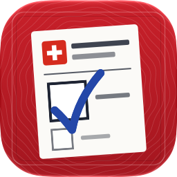

Apps von Brian Ceccato
Kleine, nützliche Apps für iPhone und iPad. Gratis, ohne Werbung, ohne Tracking.
Blitzer Busse Schweiz
Bussenrechner und Bussenkatalog für die Schweiz und die Nachbarländer, mit Prüflisten.
Schweizer Gesetze
Das Bundesrecht von Fedlex, schön zu lesen: BV, OR, ZGB und alle anderen Erlasse, mit Fassungen und Vergleichen.
Nationalhymne Schweiz
Der Schweizerpsalm zum Mitlesen, Verstehen, Mitsingen und Auswendiglernen.
Dienstgrade & Truppen
Grade, alle Abzeichen der Uniform und Truppengattungen der Schweizer Armee, mit Quiz und Lernkarten.
Fahrtheorie
Lernen für die Theorieprüfung Auto, Töff, Mofa, Traktor und Lastwagen, mit eigenen Übungsfragen, gezeichneten Verkehrssituationen und dem Gesetz dazu. Bald im App Store.

Roter Pass
Lernen für den Einbürgerungstest und das Gespräch, für alle 26 Kantone, mit eigenen Lernfragen, Probeprüfung und dem Schnelltest «Würdest du bestehen?». Bald im App Store.
Bober
Babytagebuch für zwei, mit eigener Seite.